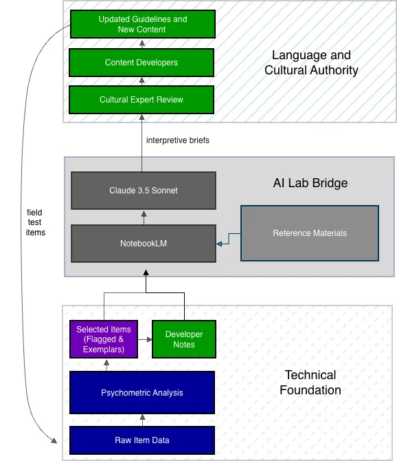

AI Lab and Computational Infrastructure for Hawaiian-Medium Assessment
Program Tech Consultant & AI Lab Co-Designer · 2016–Present
KĀʻEO is the only Hawaiian-medium assessment system in the world, serving approximately 3,000 students as part of the Hawaiian Language Immersion program. It is also the only Indigenous language assessment to undergo federal peer review. Since 2016, I've worked with researchers and program leads to build computational infrastructure for the program.
In 2025, I co-designed an AI Lab that bridges psychometric analysis and Hawaiian cultural and language expertise, while keeping Hawaiian content under community control.
My Role
I designed the AI Lab architecture and collaborated with Hawaiian Language and cultural experts as part of a three-phase workflow. The project started with the development of governance frameworks, and I conducted all prompt engineering, system documentation, and design tasks for a RAG framework on top of two flagship LLM tools (NotebookLM and Claude).
Collaborators
Pōhai Kūkea-Shultz provided Hawaiian linguistic and cultural authority and serves as lead author on the research paper. The psychometric analyses that served as inputs to the AI Lab were provided by Kerry Englert of Seneca Consulting.
Materials
Research Publication
Kūkea-Shultz, P. & Brockmann, F. (2025). Bridging Psychometric and Content Development Practices with AI. arXiv:2512.17140. View Publication (arXiv)
The AI Lab inverts the conventional "human-in-the-loop" framing. Rather than placing humans as checkpoints within an automated process, we embedded AI tools within a human-governed workflow. Hawaiian educators and psychometric experts aren't merely participants: they ARE the loop.
The problem we solved: KĀʻEO assessments are written entirely in Hawaiian, but most psychometric analysts aren't Hawaiian speakers. Conversely, content developers are experts in language and pedagogy, not psychometrics. This created a structural gap: statistical flags could identify that items performed poorly, but interpreting why required scarce bilingual intermediaries who could bridge both domains.
The Three-Phase Workflow
Phase
Function
Authority
Phase 1: Data Ingestion
Human-led identification of flagged items, ingestion of psychometric data and reference documents
Cultural and linguistic validation, final interpretation, actionable recommendations
Hawaiian language experts retain all final authority
Why this matters: The AI excels at structural pattern recognition (identifying DOK misalignment, cognitive overload, and format constraints). But it cannot grasp the figurative depth and relational meaning embedded in Hawaiian. When the AI misinterpreted certain grammatical features as errors, KĀʻEO staff caught it: these were actually highly valued language skills. This limitation isn't a flaw to fix; it's a boundary to respect.
AI Lab Workflow Diagram

How the three-phase system works
Related Work
Hawaiian Font Analysis Project
Tools for analyzing whether fonts correctly render Hawaiian diacritical marks (ʻokina and kahakō) across different systems and browsers.